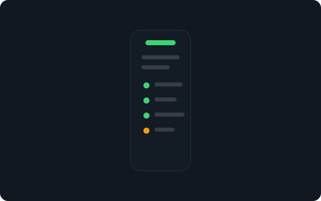
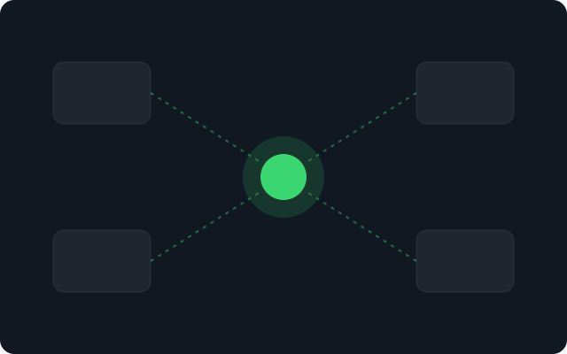
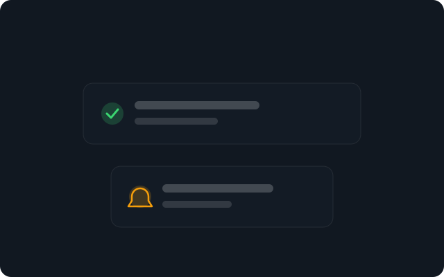
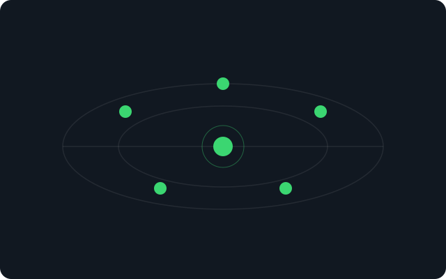

Brand assets
Placeholder brand assets for the UpGuard design-system demo. The wordmark and favicon are placeholders — replace them with your own before any public deploy.
Wordmark placeholder
UpGuard
Mobile lockup: green dot + 700-weight wordmark. Replace with your own wordmark and favicon before public deploy.
Self-hosted fonts
Ag
Plus Jakarta Sans · display/headings · 200–800Ag
Inter Variable · body/UI · 300–700Imagery — token-derived SVG illustrations

hero.svg — neutral dashboard scene
setup-in-under-2-minutes.svg

monitor-on-the-go.svg

integrations.svg

keep-users-informed.svg

multi-location-checks.svg
All imagery is token-derived SVG (no text, no third-party logos). For customer-logo walls in your product, use your own grayscale logo set.